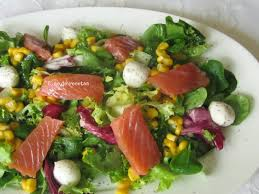

Ensalada Fresca con Tomate, Salmón y Queso
Índice
Ingredientes
- 150g de salmón ahumado o cocido
- 2 tomates maduros
- 100g de queso fresco o feta
- 1 cebolla pequeña
- 1 diente de ajo (opcional)
- Aceite de oliva virgen extra
- Sal y pimienta al gusto
- Hojas verdes (rúcula, espinaca, lechuga, etc.)
Paso a paso
- Lava bien todos los ingredientes.
- Corta el tomate y el queso en cubos.
- Coloca las hojas verdes en un bol.
- Añade el tomate, el queso y el salmón.
- Aliña con aceite, sal y pimienta al gusto.
- Mezcla suavemente y sirve.
Resultado final

Torna al principi de la pàgina